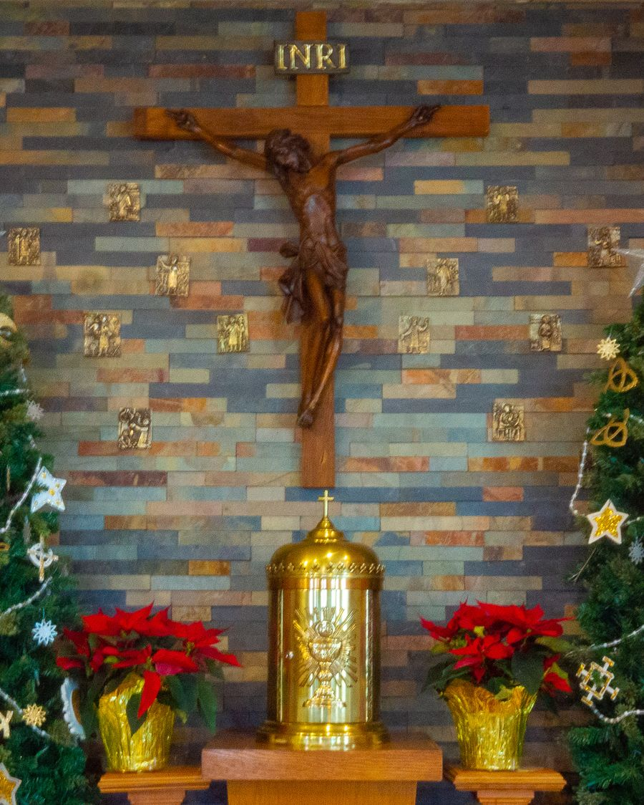
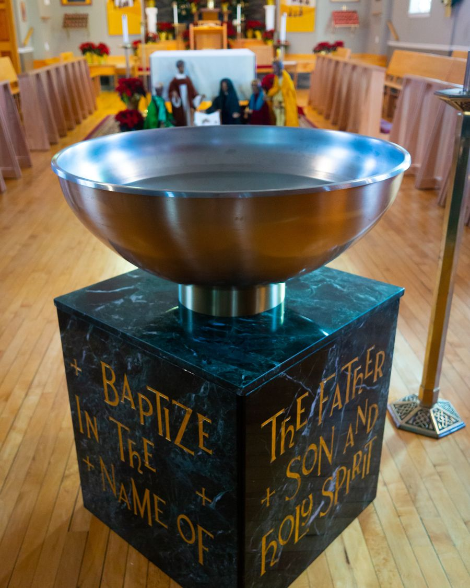

Worship that is transcendent. Ministry that is grassroots. A community united in Christ Jesus.
The Holy Eucharist
- Sunday10:30 a.m.
- Wednesday7:00 p.m.
All are welcome. The building is fully accessible, and hearing assistance is available.
Evangelical Catholic
We hold the Holy Scriptures as the living Word of God, and celebrate the Mass in its fullness as it has been handed down from the earliest centuries. We are a congregation of the North American Lutheran Church.
The Rev. Troy A. Mulvaine, Pastor


Come and See
75 17th AvenueNorth Tonawanda, New York 14120
- Parish office(716) 957-3377
- Pastor(716) 207-3679
- Emailchurchoftheapostles@hotmail.com